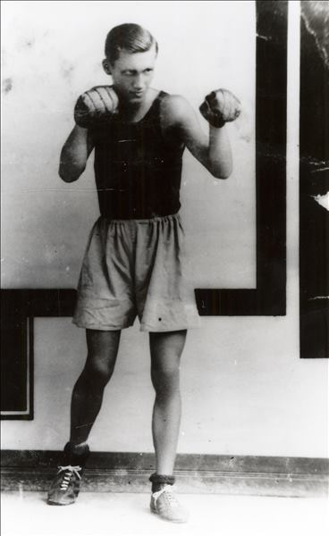
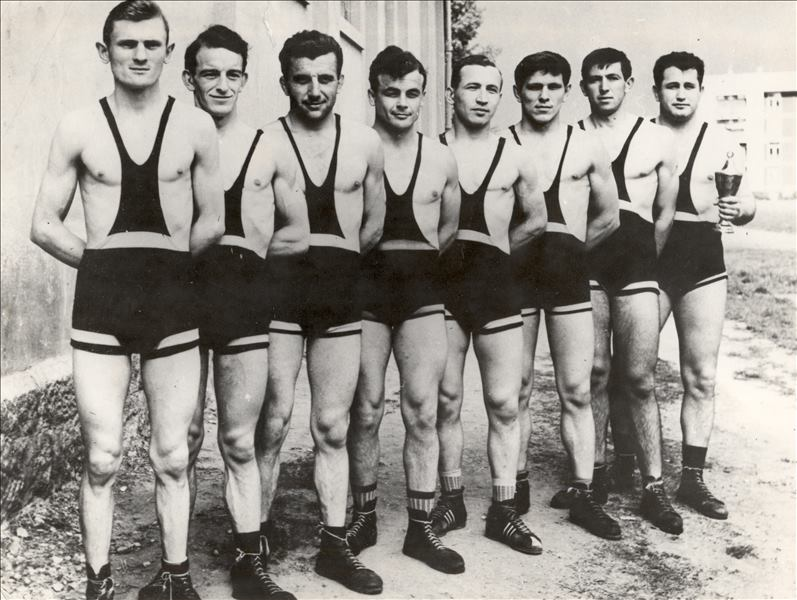
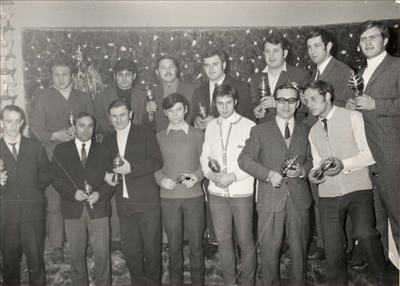
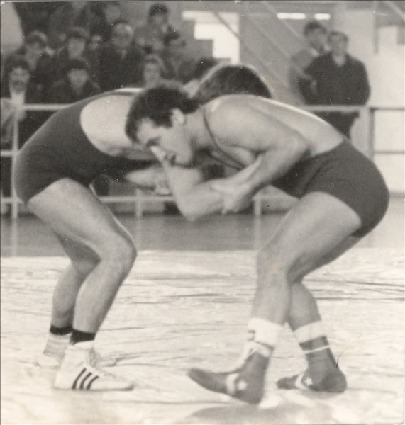

Boks, hrvanje, karate
KRONOLOGIJA
1906.
u Varaždinu prvi puta prikazano hrvanje
1909.
na Sokolskom sletu u Varaždinu predstavljen boks
1933.
na Slavijinom igralištu priređeno prvenstvo Varaždina u boksu (nastupili samo Zagrepčani)
9. 6.1935.
u Varaždinu u vrtu Kolodvorske restauracije gostovali hrvači iz Češke, Njemačke i Austrije
1939.
osnovana Teško atletska sekcija unutar ŠK Slavija, vodi je Ervin Reisinger
1940.
članovi Slavije osvajaju dva naslova prvaka Hrvatske za početnike
1945.
održan boksački turnir u Varaždinu
1950.
osnovana hrvačka sekcija Službenik (na inicijativu Ivana Zamode, uskoro postaju sekcija Tekstilca)
1951.
u sklopu RSD Tekstilca osnovan hrvački klub (kasnije TAK Varteks)
1954.
juniorski prvaci Jugoslavije Ladislav Bakšaj i Rudolf Verzel
1955.
Ladislav Bakšaj seniorski prvak Jugoslavije
1956.
Ladislav Bakšaj seniorski prvak Jugoslavije
1956.
osnovan boksački klub Drvodjelac (osnivač dugogodišnji boksač Milan Remar)


Milan Remar, 106566
1959.
Ladislav Bakšaj seniorski prvak Jugoslavije
1959.
Božidar Pozder seniorski prvak Jugoslavije
1961.
Ladislav Bakšaj seniorski prvak Jugoslavije
1961.
hrvači TAK Varteks ekipni prvaci Jugoslavije (u Beogradu pobjeđuju Proleter s 9:7)

Hrvači TAK Varteks, 1961, GMV 106553
1961.
Božidar Pozder seniorski prvak Jugoslavije
1962.
Božidar Pozder seniorski prvak Jugoslavije u klasičnom stilu
1968.
Karlo Čović sudjeluje na Olimpijskim igrama u Mexicu
16. 1. 1969.
osnovan karate klub Varaždin (osnivač dr. Marijan Mlinarić, prvak Hrvatske u poluteškoj kategoriji)
1969.
hrvači TAK Varteks osvajaju drugi naslov prvaka Jugoslavije (za Varteks se bore pojedinačni prvaci države u svojim kategorijama i reprezentativci Karlo Čović, Stjepan Fajfarić, B. Pozder, Milan Špalj i Branko Hrman)

Hrvači TAK Varteks, 1969, GMV 106583
1971.
Karlo Čović osvaja zlatnu medalju na Mediteranskim igrama u Izmiru
1972.
Karlo Čović sudjeluje na Olimpijskim igrama u Münchenu
1972.
Ivica Lepen (Stephan Lupino) hrvatski karate prvak u pojedinačnoj kategoriji, zatim prvak Jugoslavije u apsolutnoj kategoriji; varaždinski karatisti ekipno prvi
1973.
Karlo Čović osvaja naslov prvaka Jugoslavije

Hrvačka borba, 106584
8. 12.1974.
Momčadsko prvenstvo Hrvatske u Varaždinu
1977.
Živko Nikolov, član TAK Varteks višestruki prvak Jugoslavije (1977., 1978. i 1979., 1981.)
1980.
boksač Rikard Dolenec juniorski prvak Jugoslavije u najtežoj kategoriji
1988.
bivši varaždinski uspješni boksač Viktor Plavec sudjeluje kao boksački sudac na OI u Seulu te je pritom proglašen i nagrađen kao najbolji sudac olimpijskog boksačkog turnira
1990-ih
Esad Garibović trostruki prvak Hrvatske u teškoj i apsolutnoj kategoriji

Esad Garibović, GMV 106563
1988.
Bernard Ban, član TAK Varteks 1986. - 1987., sudionik OI u Seulu
1992.
Esad Garibović, trostruki prvak Hrvatske u karateu i hrvatski reprezentativac, pobjednik međunarodnog Croatia kupa (također i 1995. godine)
17. 6.1995.
prvenstvo Hrvatske u savate boksu
1995.
Esad Garibović pobjednik međunarodnog Croatia kupa
25.5.1997.
Memorijalni turnir Zoran Novotny